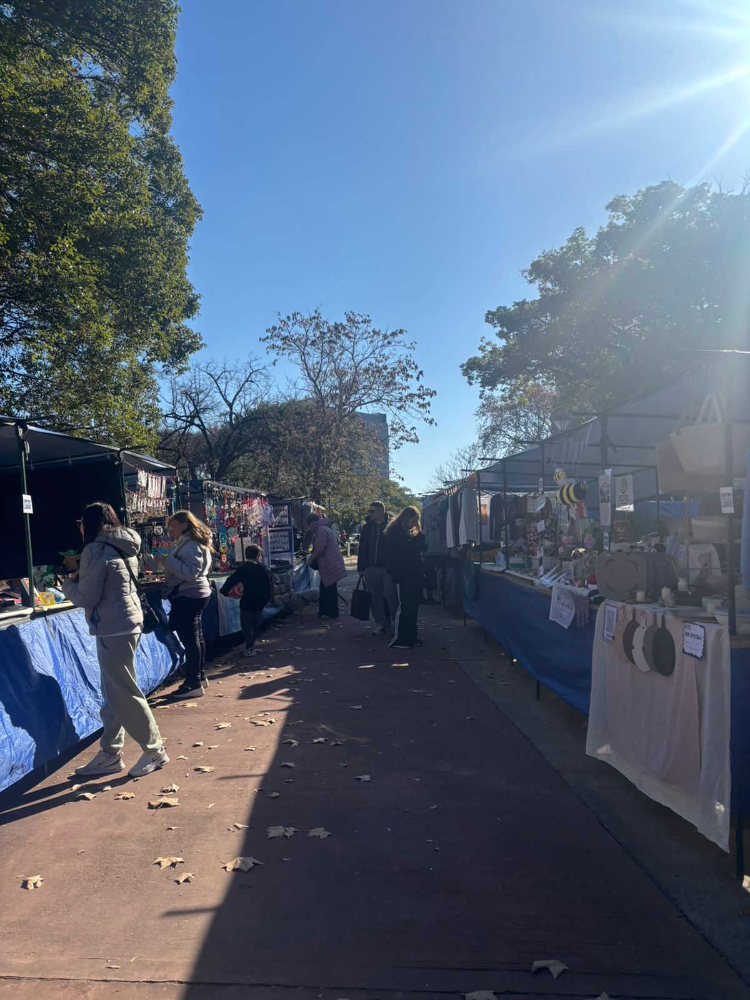

La Feria de las Plazas es una iniciativa impulsada por La Cámpora a través de su Frente de Economía Social. Se trata de una propuesta itinerante que reúne a emprendedores, artesanos y productores de distintos barrios de la Ciudad de Buenos Aires, brindándoles un espacio para comercializar sus productos y fortalecer redes de trabajo comunitario. Cada fin de semana la feria se instala en una plaza diferente y, en el caso de Versalles, se realiza el tercer domingo de cada mes. El circuito también incluye plazas de barrios como Boedo, Almagro, Villa del Parque, Abasto e Irlanda.
Cecilia, integrante del Frente de Economía Social y una de las organizadoras de la iniciativa, explicó cómo funciona este proyecto, cuáles son sus objetivos y qué desafíos enfrentan para sostener estos espacios de trabajo y encuentro en los distintos barrios porteños.

¿Cuándo nace la Feria de las Plazas?
"Hacemos la feria una vez al mes en cada plaza. En nuestro caso, acá en Versalles, se realiza el tercer domingo de cada mes. Pero además circula por distintas plazas de Capital Federal: Plaza Irlanda, Boedo, Almagro, Villa del Parque, Abasto y otros barrios. Vamos rotando todos los fines de semana."
¿Cómo puede encontrarla el público?
"La feria se puede encontrar en las plazas donde se realiza cada fecha y también en nuestras redes sociales, tanto en Facebook como en Instagram, donde aparecemos como Feria de las Plazas."
¿Los puestos suelen variar en cada jornada? ¿Cómo se organizan los feriantes?
"Nos manejamos principalmente a través de grupos de WhatsApp. Vamos difundiendo las convocatorias y cada emprendedor decide en qué fecha participar. No existe la obligación de asistir todos los fines de semana; cada uno elige el lugar que más le conviene para feriar."
¿Qué permisos necesitan para organizar una feria?
"Tenemos que gestionar permisos ante la Junta Comunal y el Gobierno de la Ciudad. También debemos contar con una póliza de seguro, informar a la comisaría correspondiente y cumplir con una serie de requisitos administrativos."
¿Existen limitaciones para participar?
"Sí. El Gobierno de la Ciudad establece un máximo aproximado de cien puestos por feria. Además, quienes venden productos gastronómicos deben tener la libreta sanitaria y el curso de manipulación de alimentos al día. En nuestra feria no permitimos productos de reventa ni ventas por catálogo porque priorizamos la producción propia."
"Hay ferias que pueden llegar a cobrar alrededor de 50 mil pesos por un puesto. Nosotros cobramos 10 mil pesos para que sea accesible y permita que más emprendedores puedan participar."
— Cecilia, organizadora de la Feria de las Plazas¿Cómo surgió el proyecto?
"La feria nació desde el Frente de Economía Social de La Cámpora para dar respuesta a trabajadores que no cuentan con empleo registrado: artesanos, productores autogestionados y emprendedores independientes. La idea fue generar espacios donde puedan comercializar sus productos y fortalecer sus actividades."
¿Hace cuánto participás en la organización?
"Estoy en el Frente de Economía Social desde 2017. Empecé organizando actividades en esta misma plaza y después participamos de ferias en escuelas, festivales y distintos eventos comunitarios en la ciudad."
¿Cuántas personas participan en la organización?
"Somos militantes de La Cámpora y organizamos este espacio como una herramienta para acompañar a los trabajadores. Somos varios compañeros distribuidos en distintas comunas. Cada grupo se ocupa principalmente de las ferias de su territorio, aunque todos trabajamos de manera articulada."
Además de brindar un espacio de venta, ¿ofrecen otras herramientas a los emprendedores?
"Sí. Trabajamos en capacitaciones y acompañamiento. Ayudamos con cuestiones vinculadas a costos, comercialización digital, fotografía de productos, promociones bancarias y distintas herramientas que les permitan mejorar sus ventas y desarrollar sus emprendimientos."
¿Cuál es el objetivo principal de la feria?
"Buscamos generar oportunidades de trabajo para personas que muchas veces quedaron fuera del mercado laboral formal o necesitan complementar sus ingresos. Hoy la situación económica es difícil y muchos emprendimientos encuentran en estas ferias una posibilidad concreta de sostenerse."
¿Cuánto dura una jornada de feria?
"Generalmente entre seis y ocho horas. En invierno solemos acortar un poco el horario por las bajas temperaturas, mientras que en verano podemos extendernos si hay buena circulación de público."
¿Qué importancia tiene el trabajo territorial en cada barrio?
"Nos organizamos por comunas, que es la forma territorial en que está dividida la Ciudad de Buenos Aires. Los compañeros que militan en cada comuna son quienes sostienen las ferias de su zona, colaboran con la organización, decoran los espacios, ponen música y muchas veces suman actividades culturales."
¿Qué impacto tiene la feria en la comunidad?
"Muchos de los feriantes son vecinos del barrio. Hay personas que se quedaron sin trabajo o que comenzaron un emprendimiento para complementar sus ingresos. La feria también ayuda a generar vínculos entre ellos y a construir una red de apoyo comunitario."
La Feria de las Plazas se presenta como un espacio que articula trabajo, comunidad y participación barrial. Además de la comercialización de productos, la propuesta permite visibilizar la realidad de emprendedores, artesanos y trabajadores autogestionados que encuentran en estos espacios una oportunidad para sostener y desarrollar sus actividades.
A través de su recorrido por distintos barrios de la Ciudad de Buenos Aires, la feria fomenta vínculos entre vecinos, fortalece redes comunitarias y ofrece una alternativa de acceso al trabajo para quienes buscan impulsar sus proyectos independientes.
📲 Para conocer las fechas y cómo participar: @feriadelasplazas · @lacamporaversalles